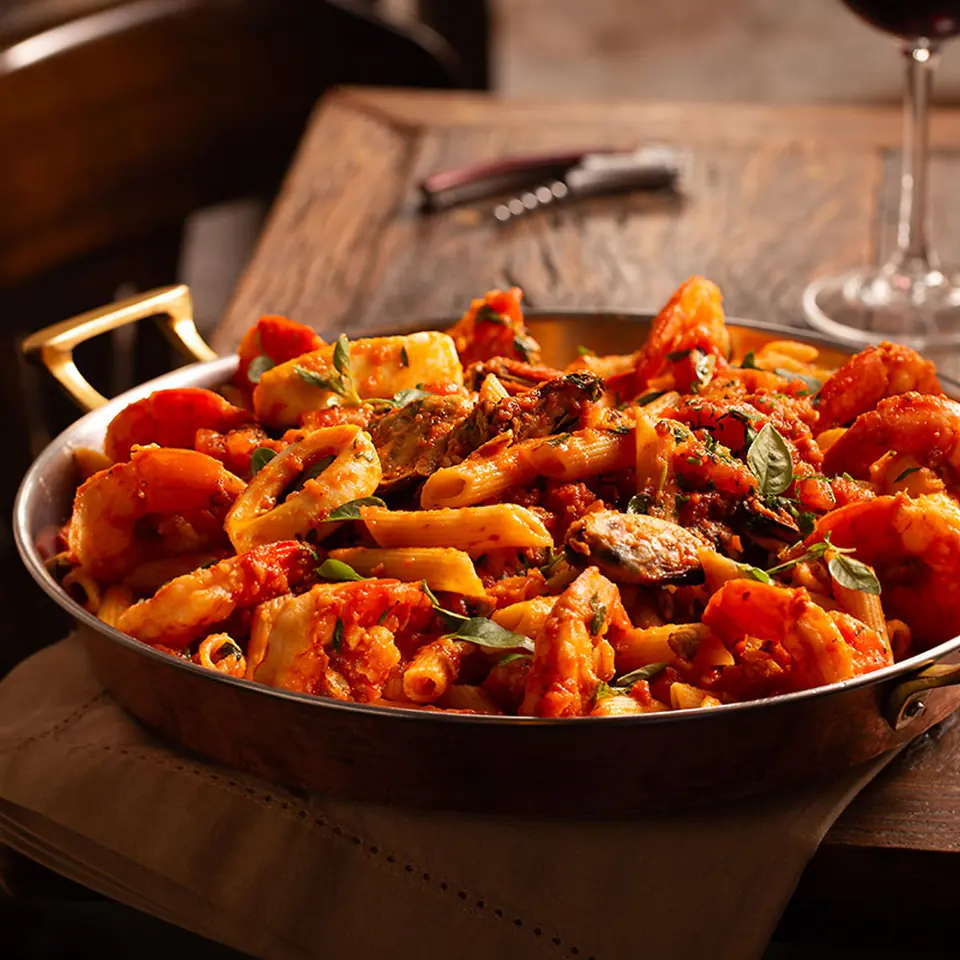
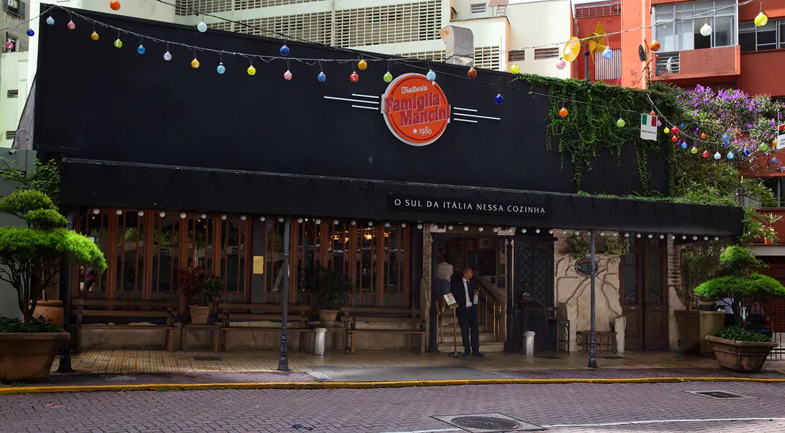
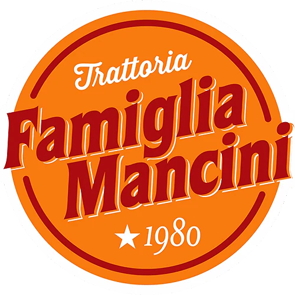
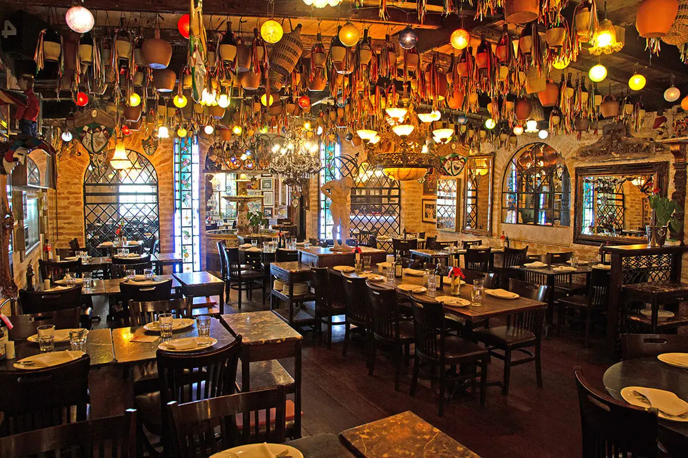
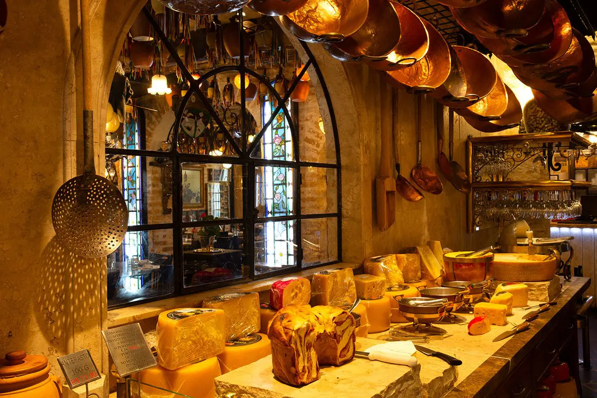
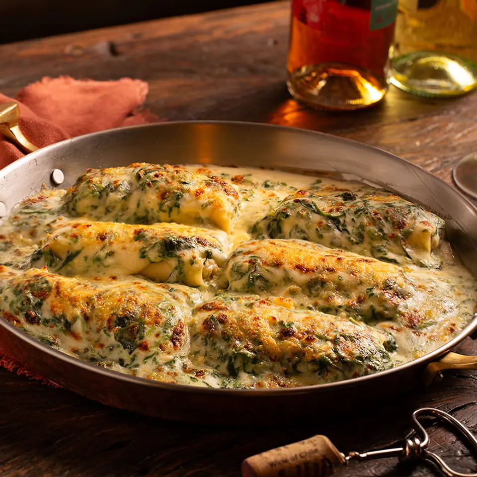
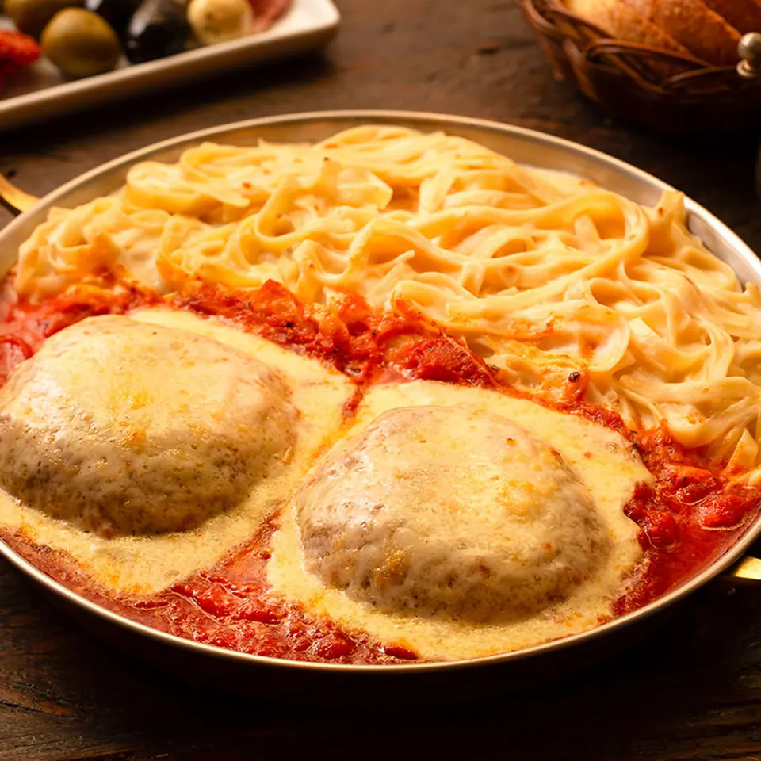
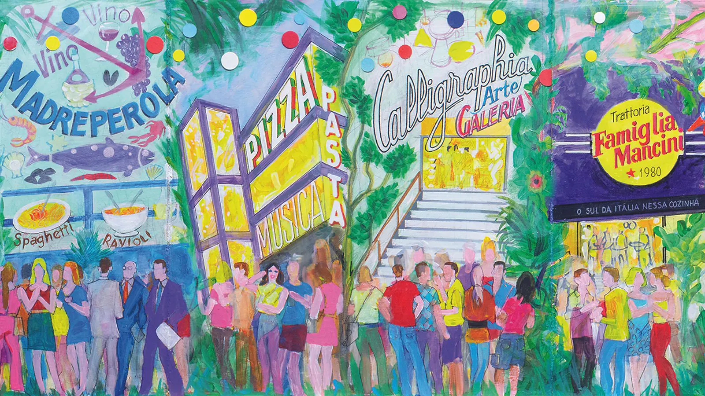

Penne com Frutos do Mar
Camarões, mexilhões e lula ao molho de tomate fresco com manjericão.
Rua Avanhandava, 81 · Bela Vista · desde 1980
Porções generosas para dividir à mesa, uma sala de antepastos com mais de 70 opções e salões que merecem ser vistos de perto.
Horários
Entre

Rua Avanhandava, 81
Fundada em maio de 1980, a Famiglia Mancini Trattoria é a casa tradicional do Grupo Mancini.
Ao longo das décadas, mais de 15 milhões de pessoas foram recebidas nos seus salões.

Os ambientes da Trattoria são ricamente decorados, e o salão guarda uma fonte em seu interior.

A sala de antepastos é self-service e fica no centro do salão: você se serve à vontade e paga pelo peso do prato.
Os pratos da Trattoria são servidos para duas ou mais pessoas, pensados para serem compartilhados à mesa, em família.

Camarões, mexilhões e lula ao molho de tomate fresco com manjericão.

Massa recheada de ricota e espinafre, gratinada ao molho branco.

Fetuccini ao molho branco com polpetone gratinado ao sugo.
A Trattoria é a casa tradicional do Grupo Mancini. Na mesma Rua Avanhandava ficam o Il Ristorante, a Pizzaria e o Calligraphia.

Nº 37 · desde 2004
Nº 40
Nº 81 · desde 1980 · esta casa
Nº 126 · desde 2001
Escolha o dia, o horário e quantas pessoas vêm. O pedido sai pronto para o WhatsApp da casa, e a equipe confirma a reserva por lá.
Pedido pronto
Abrimos o WhatsApp com a mensagem para a casa. Se ele não abriu, use o botão abaixo. A mesa está reservada só depois da confirmação da equipe.
Ficam salvos só neste navegador, para você pedir alteração ou cancelamento depois.
Nenhum pedido enviado deste aparelho ainda.
| Domingo | 11h30 às 00h |
|---|---|
| Segunda a quarta | 11h30 às 01h |
| Quinta | 11h30 às 01h30 |
| Sexta e sábado | 11h30 às 02h30 |
Horários
Não. Os pratos são servidos em porções generosas, para duas ou mais pessoas, pensados para serem compartilhados.
É self-service, no centro do salão. Você se serve à vontade e paga pelo peso: R$ 27,00 a cada 100 gramas.
Para crianças até 8 anos, o Piccolino é cortesia da casa: spaghetti ao sugo, gnocchi à bolognesa ou batata frita.
Sim. Por exemplo, a Berinjela à Parmigiana, o Risoto al Funghi e as massas ao sugo, ao alho e óleo, ao pesto ou com brócolis. Veja tudo no cardápio.
Pelo formulário de reserva, que monta a mensagem para o WhatsApp da casa. Pedidos enviados deste aparelho ficam listados logo abaixo do formulário, com botões para pedir alteração ou cancelamento.
Sim. Molho ao sugo e à napolitana (R$ 100,00), à bolognesa (R$ 118,00) e pão italiano (R$ 21,00 a unidade), já com embalagem.